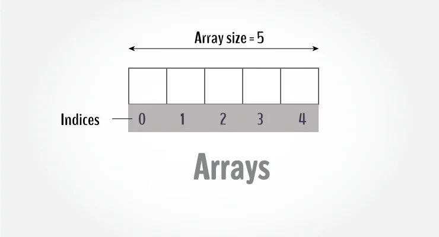
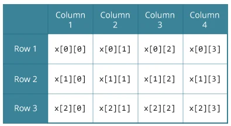
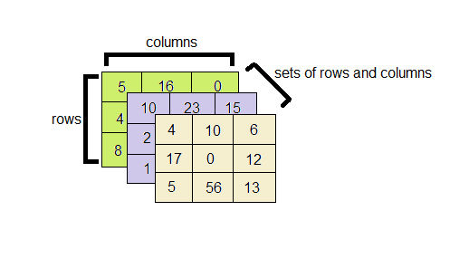

Array in Javascript
An array is a variable that can store multiple values. For example, if you want to store 100 integers, you can create an array for it.
let marks=[1, 2, 3, 4, 5, 6, 7, 8, 9, 10]

How to declare an array?
variableKeyword variableName = [];
let marks=[]
Access Array Elements
You can access elements of an array by indices.
Suppose you declared an array mark as above. The first element is mark[0], the second element is mark[1] and so on.
Few keynotes:Arrays have 0 as the first index, not 1.
How to initialize an array?
let marks = [];
marks[0] = 1,
marks[1] = 2,
marks[2] = 3,
marks[3] = 4,
marks[5] = 5;
or you can just write
let mark = [19, 10, 8, 17, 9];
We can store multiple types of values in an array
let myArray = [1, 2, 3, 'Hello World', true, {name: 'Jhon', age: 12}]
Operations That Can Be Performed On Arrays
1. Traversal
Traversing the array element means accessing each and every element of the array for a specific purpose.
Array is a linear data structure because all its elements forms a sequence, traversing its elements is very simple and
straightforward.
Algorithom for array traversal
Step 1: [Initialization] Set I=lower_bound
Step 2: Repeat steps 3 to 4 while I<=upper_bound
Step 3: Apply process to A[I]
Step 4: Set I=I+1
[End of Loop]
Step 5: Exit
Write a program to read and display n numbers using array
let arr=[];
let i,num;
for(i=0;i<10;i++){
num=parseInt(prompt(`Enter arr[${i}] = `));
arr[i]=num;
}
for(i=0;i<10;i++){
console.log(arr[i]);
}
Try Your self Read and display n random numbers using an array
Write a program to read n number of values in an array and display it in reverse order
Write a program to copy the elements of one array into another array
Write a program to find sum and average of an array of n numbers
Write a program to find the smallest and largest number of an array
Write a program to find the second largest element in an array
Write a program to find the position of smallest and largest number of an array
Write a program to exchange smallest and largest number of an array
Write a program to find whether the array of integers contain a duplicate number
Write a program to count a total number of duplicate elements in an array
Write a program to print all unique elements in an array
Write a program to read marks of 10 students in the range of 0-100. Then make groups: 0-10, 10-20, 20-30 etc.
Count the number of values that falls in each group and display the result.
Demo: arr=[33, 55, 88]
group 0-10: 0
group 10-20: 0
group 20-30: 1
Write a program to count the frequency of each element of an array
Write a program to separate odd and even integers in separate arrays
Write a program to find the majority element of an array
A majority element in an array A[] of size n is an element that appears more than n/2 times
(and hence there is at most one such element)
Write a program to find the number occurring odd number of times in an array
Write a program to find the missing number from a given array. There are no duplicates in list
Write a program to find the two repeating elements in a given array.
The given array is : 1 3 4 2 5 6 9 8
The missing number is : 7
2. Insertion
Algorithom to insert a value in the array in a given position
Step 1: [Initialization] Set I=N
Step 2: Repeat steps 3 and 4 while I>=Pos
Step 3: Set A[I+1]=A[I]
Step 4: Set I = I-1
[End of Loop]
Step 5: Set N=N+1
Step 6: Set A[Pos]=Value
Step 7: Exit
Write a program to insert a number at a given location in the array
3. Deletion
Algorithom to delete a value in the array in a given position
Step 1: [Initialization] Set I=Pos
Step 2: Repeat steps 3 and 4 while I<=N-1
Step 3: Set A[I]=A[I+1]
Step 4: Set I = I-1
[End of Loop]
Step 5: Set N=N-1
Step 6: Exit
4. Merging
Write a program to merge two unsorted array
Write a program to merge two array in a sorted array
5. Search
Linear Search
Binary Search
Multidimensional arrays (array of an array)
you can create an array of arrays. These arrays are known as multidimensional arrays. For example,
Initialization of a 2D array
let test = [ [1, 2, 3, 4, 5], [6, 7, 8, 9, 10] ]

Initialization of a 3D array
You can initialize a three-dimensional array in a similar way like a two-dimensional array. Here's an example,
let test = [
[
[3, 4, 2, 3], [0, -3, 9, 11], [23, 12, 23, 2]
],
[
[13, 4, 56, 3], [5, 9, 3, 5], [3, 1, 4, 9]
]
];

Sparse Matrices
Introduction To Sorting
Bubble Sort
Algorithom for Bubble Sort
Advantages of Bubble Sort
Insertion Sort
Algorithom for Insertion Sort
Advantages of Insertion Sort
Selection Sort
Algorithom for Selection Sort
Advantages of Selection Sort
Radix/Bucket Sort
Algorithom for Radix/Bucket Sort
Advantages of Radix/Bucket Sort
Shell Sort
Algorithom for Shell Sort
Advantages of Shell Sort
Case Study
Merge Sort
Quick Sort